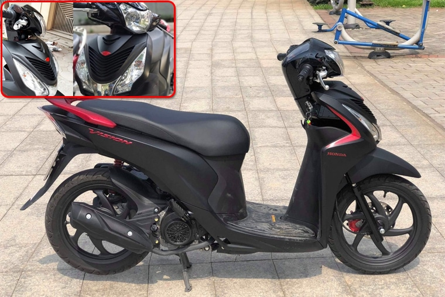
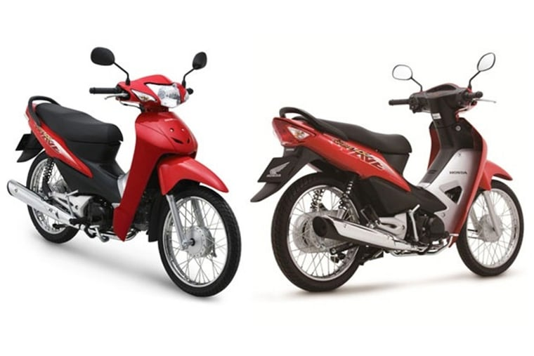

Đứng đầu trong top 10 dòng xe máy được ưa chuộng nhất tại Việt Nam chắc chắn đầu tiên phải kể đến là Honda Vision. Mẫu xe máy này có rất nhiều màu sắc khác nhau để người dùng lựa chọn, nhất là trong năm 2020 mới đây. Honda vừa cho ra mắt thêm hai gam màu mới là đen bóng và đỏ đậm bổ sung vào bảng màu của Honda Vision.
 Honda vision- Mẫu xe được ưa chuộng nhất hiện nayHonda Wave Alpha 110 có lẽ là dòng xe máy không còn xa lạ đối với bất kì ai tại Việt Nam. Mẫu xe số có giá thành thấp, khả năng hoạt động vô cùng cao, bền bỉ, phụ kiện cao cấp ít khi phải bảo dưỡng, sửa chữa. Chính vì thế những chiếc xe Honda Wave Alpha 110 luôn nằm trong top 10 xe máy bán chạy và được ưa chuộng nhất tại Việt Nam.
 Honda Wave Alpha 110 dòng xe số quen thuộc